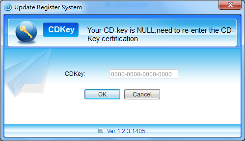
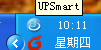
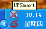

1. Click Setup UPSmart_setup.exe, select the installation path to complete the installation.
2. Note installed under Windows XP, NT 4.0/2000 and Server, please use the super administrator login.
Run UPSmart
1. After installation is complete, the system generates a desktop
shortcut to the application and the system generates log in the
start menu shortcut bar.
2. Note that the system after the user logs in windows, can be set to
automatically start the service program.
3. After the software is started, the column can be seen in the
system icon, the program's main interface as shown below,
and the first start the software you need to enter the serial
number, if you do not enter a serial number, the software will
regularly prompted to enter the serial number.

4. After you enter the correct serial number, the software will display
the main interface, and will appear in the taskbar following interface:

UPSmart and UPS connect

UPSmart and UPS unconnect
Uninstall UPSmart
To uninstall UPSmart, in UPSmart program group, select "Uninstall UPSmart" and confirm to complete the deletion.